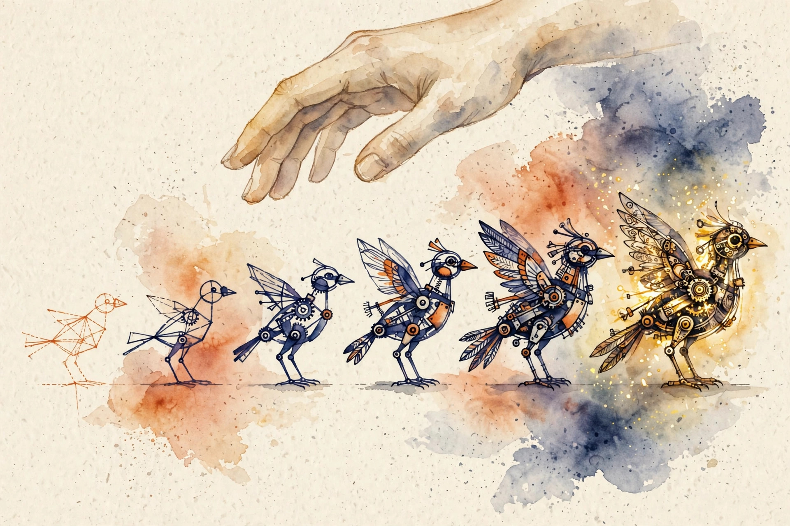
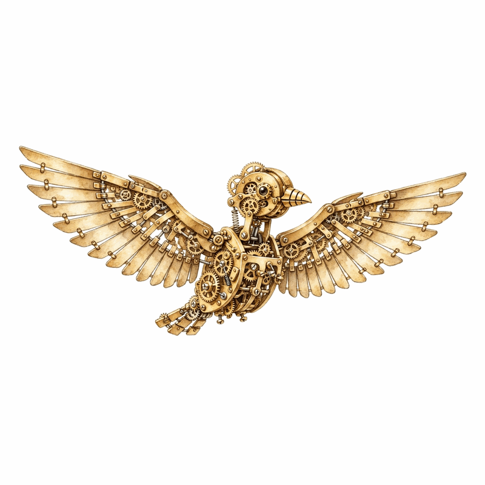

Narrated from the lesson document
Open-ended evolution and deep research
What if the agent designs the agent? This companion walks the full arc of Unit 04: from architecture search and evolution to code-generation funnels, deep-research loops, and the provenance, holdout, and sandbox discipline that keeps open-ended search honest.
From the lesson The idea, and every number beside it, comes from the cited section of u04_open_evolution.md. The phrasing is the companion’s.
Illustration Invented by the companion: an analogy, a toy with made-up values, or a what-if. Never lecture content.
companion Companion voice: the idea above the tag is from the lesson. The generalization below it is the companion’s.
Provenance: no full lecture transcript exists for sessions 7 to 9. This page narrates the lesson document content/v2/cs329a/lessons/u04_open_evolution.md, not a video. Paper titles come from the official schedule through the lesson. The builder did not inspect paper contents. Toy numbers are the lesson’s own computed values, re-plotted here with section citations. Claim class: SOURCE ATTRIBUTION PENDING on paper pointers. Toys are computed and traceable.
Watch the lecture
Official lecture video: Stanford CS329A Self-Improving AI Agents | Part 7 | Self-Improvement and Deep Research Agents (YouTube).


Stop hand-carving each agent
From the lessonC01 §3
Stop hand-carving each agent. Define the workshop (the design space), the ruler (the fitness function), and let search carve. The designer moves up one level: from the agent to the search that finds agents.
From the lessonC01 §2, §6
The toy: which agent design solves the task best? Validation scores: ReAct 0.62, plan-then-execute 0.55, self-consistency over tools 0.71. Search picks self-consistency. Twelve designs evaluated, each on 50 validation tasks. Scores range 0.41 to 0.73. Top-3: 0.73, 0.70, 0.68. Cost: 12 × 50 = 600 task runs.
From the lessonC01 §2 Pick a design. The toy scores it with the lesson’s validation numbers.
One edit per child
From the lessonC02 §3
Mutation is a small, random edit. One edit per child keeps the change attributable: if the child is better, you know which edit did it. Many edits at once make orphans: better, but nobody knows why.
From the lessonC02 §2, §6
The toy parent is a ReAct agent at fitness 0.62. M1 edits the prompt: 0.65. M2 adds a tool: 0.71. M3 changes the flow: 0.58. Best child M2, gain +0.09. Children’s range 0.58 to 0.71 (0.13). Random designs range 0.41 to 0.73 (0.32). The children’s range is narrower: locality holds on the toy.
| Child | Edit | Fitness | Gain |
|---|---|---|---|
| M1 | prompt edit | 0.65 | +0.03 |
| M2 | tool add | 0.71 | +0.09 |
| M3 | flow change | 0.58 | −0.04 |
Selection is the admissions office
From the lessonC03 §3
Selection is the admissions office. Truncation takes the top GPAs. Tournament runs playoffs. Proportionate runs a lottery with weighted tickets. All three prefer the fit. They differ in how much luck they allow.
From the lessonC03 §2, §6
The toy: 6 candidates, fitnesses [0.41, 0.55, 0.62, 0.68, 0.71, 0.73]. Population mean: 3.70 / 6 = 0.61667. Truncation keeps 3: [0.73, 0.71, 0.68]. Survivor mean: 2.12 / 3 = 0.70667. Selection differential: 0.09.
From the lessonC03 §6 Move the keep-count slider. The toy applies truncation to the lesson’s population.
A graduate student that never sleeps
From the lessonC04 §3
AI Scientist: a graduate student that never sleeps: ideas, code, experiments, papers, peer review, all in a loop. AlphaEvolve: a programmer that never stops refactoring: every edit is tested, only improvements survive.
From the lessonC04 §2, §6
Toy AI Scientist week: 20 ideas proposed, 12 run successfully, 8 produce writeups, 3 pass review. Yield: 3 / 20 = 0.15 papers per idea. Toy AlphaEvolve run: 500 edits proposed, 80 pass tests, 12 improve on the best, final best 8 percent better than seed. Yield: 12 / 500 = 0.024 improvements per edit.
| Loop | Stage | Count |
|---|---|---|
| AI Scientist | ideas → run → writeups → pass review | 20 → 12 → 8 → 3 |
| AlphaEvolve | edits → pass tests → improve | 500 → 80 → 12 |
Flood the zone with drafts
From the lessonC05 §3
Flood the zone with drafts. The tests are the dam. Only the strong swimmers get through. The search is the flood, the tests are the selection.
From the lessonC05 §2, §6
The toy: N = 1000 samples, compile rate 0.6, visible-test pass rate 0.3. Survivors: 1000 × 0.6 × 0.3 = 180. Hidden-test pass among survivors: 0.5, so about 90 truly good programs. Yield: 90 / 1000 = 0.09.
From the lessonC05 §6 Move the sliders. The toy applies the lesson’s survivor formula.
Sample an ocean, fish the ponds

From the lessonC06 §3
Sample an ocean. Filter to a lake. Cluster the lake into ponds of programs that behave alike. Fish one from each big pond. Diversity of submissions beats ten copies of the same guess.
From the lessonC06 §2, §6
The toy: 1,000,000 samples → 10,000 pass the example tests → cluster by behavior on new inputs → 400 clusters → pick one per large cluster → submit 10. The top 10 clusters hold 6,000 programs. Coverage: 60 percent of the filtered mass with 10 picks.
Reason until you hit a fact you do not know
From the lessonC07 §3
Reason until you hit a fact you do not know. Look it up. Reason on. The search is a memory the model does not have to carry: external, fresh, citable.
From the lessonC07 §2, §6
The toy: 20 questions needing facts. Without search: 8 right (0.40). With search: the retriever returns the right fact 0.80 of the time, and given the right fact the reasoner answers right 0.90 of the time. Expected: 20 × 0.80 × 0.90 = 14.4, about 14 right (0.70). Gain: 0.30 absolute.
From the lessonC07 §6 Move the sliders. The toy decomposes the lesson’s gain into retrieval quality and reasoning quality.
Provenance is the receipt for a fact
From the lessonC08 §3
Provenance is the receipt for a fact. No receipt, no refund: a claim without a source cannot be checked, so it cannot be trusted. The record is small, the trust it buys is large.
From the lessonC08 §2, §6
The toy: the agent makes 50 claims. 40 carry full records (claim, source, retrieval path, date). 10 carry source names only. Audit: of the 40, 35 check out (0.875). Of the 10, 4 check out (0.40).
| Record class | Claims | Check out | Rate |
|---|---|---|---|
| Full record | 40 | 35 | 0.875 |
| Source name only | 10 | 4 | 0.40 |
The exam the student never saw
From the lessonC09 §3
The holdout is the exam the student never saw. Validation is the practice test. Picking the best practice score and calling it the exam score is self-deception with arithmetic.
From the lessonC09 §2, §6
The toy: the best of 50 designs scores 0.78 on validation (200 tasks) and 0.69 on the locked holdout (200 tasks). The 0.09 gap is the selection optimism. Per-design standard error at p = 0.7: sqrt(0.7 × 0.3 / 200) = 0.0324. Expected optimism: 0.0324 × 2.25 = 0.0729. Predicted holdout: 0.78 − 0.0729 = 0.7071, about 0.71. Observed 0.69. The arithmetic predicts the gap within 0.02.
From the lessonC09 §8 Honesty note: two approximations live here. The lesson uses the simulated constant 2.25 for the max of 50. The analytic form sqrt(2 ln n) gives 2.80 at n = 50 and optimism 0.0906. Both are labeled approximations. The honest number comes from the locked holdout.
From the lessonC09 §8 Move the slider. The toy applies the lesson’s analytic optimism form.
Budget the scarcest fuel first
From the lessonC10 §3
An evolution run burns three fuels: money, wall-clock, and attention. The run ends when any tank hits empty. Budget the scarcest first.
From the lessonC10 §2, §6
The toy: 50 designs, 200 evals each, $0.02 per eval, 3 generations. Money: 50 × 200 × 0.02 = $200 per generation, $600 total. Time: 10,000 evals at 2s each = 5.6 hours serial, 34 minutes on 10 workers. Review: 5 survivors per generation at 10 minutes each = 2.5 hours total. Verdict: money binds first if the wallet holds $400, at generation 2.
From the lessonC10 §6 Move the sliders. The toy sheets the lesson’s money math.
Novelty is a negative claim
From the lessonC11 §3
Novelty is a negative claim: nobody did this before. Negative claims need search, not assertion. The checklist turns assertion into documented search.
From the lessonC11 §2, §6
The toy: 10 machine-generated claims. Literature check kills 4 (prior art found). Baseline check kills 3 more (no beat). Ablation kills 1 (the new part does nothing). Survivors: 2 of 10. Novelty rate: 0.20.
From the lesson
From the lessonC11 §6, §8 Honesty note: the lesson’s §6 prose table reads 10 → 6 → 3 → 2, but its §8 code (kill rates 0.4, 0.3, 0.1) computes 10 → 6 → 4 → 4 at 10 claims. The two disagree. The page keeps the §6 headline table and the toy runs the §8 code, both labeled.
C11 §6 Move the slider. The toy applies the lesson’s kill rates in order: 0.4, 0.3, 0.1.A playpen with walls
From the lessonC12 §3
A sandbox is a playpen with walls. The agent plays inside. The walls are: no talking to strangers (network), no leaving the room (file writes), and a grown-up watches the clock (timeouts) and the diary (logs).
From the lessonC12 §2
The six rules. R1: no network. R2: writes only inside /task. R3: read-only outside /task. R4: every run logged with command, seed, and diff. R5: wall-clock kill at 10 minutes per run. R6: human approval for any new tool.
From the lessonC12 §6
The toy: 500 runs. 3 network calls blocked. 1 write outside /task blocked. 2 runs hit the 10-minute kill. Logs: 500 entries, each with command, seed, diff. 5 flagged for human review. The sandbox turned 6 incidents into log entries instead of breaches.
| Rule | Wall |
|---|---|
| R1 | no network |
| R2 | writes only inside /task |
| R3 | read-only outside /task |
| R4 | every run logged: command, seed, diff |
| R5 | wall-clock kill at 10 minutes |
| R6 | human approval for any new tool |
What this buys you
The arc, end to end. Architecture search lifts the designer to the search that finds agents (C01). Mutation edits one field per child (C02). Selection shifts the population upward, measured by the differential (C03). The AI Scientist and AlphaEvolve run generate-and-test at research scale (C04). Code search floods the zone and lets tests dam the flood (C05). AlphaCode clusters the lake and fishes the ponds (C06). Search-enhanced reasoning looks up what it does not know (C07). Provenance receipts every claim (C08). The holdout corrects selection optimism (C09). Three fuels budget the run (C10). The novelty checklist falsifies claims in cost order (C11). The sandbox walls the loop (C12).
companion Where the unit points next: the evolutionary loop here becomes the training loop of U05 code agents. The holdout discipline returns in U08’s long-horizon evaluation.
The playbook
Every lesson on this page, in order. Tap one to return to its chapter.